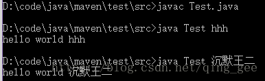

程序不过是几行代码的集合。就像下面这样：
public class Test {
public static void main(String[] args) {
System.out.println("hello world");
}
}对于初学编程的人来说，“hello world”总是绕不开的；学习 Java 编程自然不能例外。说实在话，我在大学一年级学习这寥寥几行代码时可费了老大的劲——几乎用了将近一个月的时间才消化掉这段程序（这可一点不假）。
记得老师非常“严苛”地要求我们必须在记事本上敲这段代码，不能在 IDE 中；并且要能在命令行中成功运行，打印出“hello world”。
简直难得要命啊！我差一点就要被这几行代码摧毁掉信心，换其他专业了。但幸好我没有。就目前来看，IT 行业仍然是一个前程似锦的行业，Java 依然处在编程语言排行榜的领先位置；而我，可以凭借 Java 高级开发工程师的职称在日益艰难的生存环境中混口饭吃。
对于“hello world”这段断码，我曾经有 3 个不解的地方：
String[] args？它好像压根没起作用啊。static void？看到这 3 个问题，你是不是也迫切地想知道为什么？
新文化运动领袖胡适先生曾说过这样一句话：“人同畜生的分别，就在于这个‘为什么’上”，这话虽然听起来不那么含蓄，但不失为一种积极的态度。在学习和生活当中，多问一问“为什么”，对我们的成长有天大的帮助。我相信这一点，你也愿意举双手赞同。
经过多年的历练后，现在的我可以来回答一下这 3 个问题了（假如答案不能使你满意的话，请打零分）：
1）class（类）前面的 public 并不是必须的；一个 Java 文件中有且只能有一个 public 类，并且该类名（Test）必须与文件名（Test.java）保持一致。
2）main 方法的参数是一个 String 数组，约定俗成的写法就是String[] args；尽管当前“hello world”程序中并没有用到 args 参数，但 Java 编译器要求 main 方法必须要这么着（就好像李白他爹给他起名“李白”，所以李白只能叫“李白”）。
如果想在程序中使用 args 参数，可以在运行 Java 程序的时候在命令行中键入。为了演示 args 参数的使用方法，我们把以上代码稍作调整：
public class Test {
public static void main(String[] args) {
System.out.println("hello world " + args[0]);
}
}改造后的“hello world”程序，在命令行的编译、运行命令如下：

3）static表示 main 方法为静态方法；静态方法可通过"类名.方法名"的方式来调用。这句话怎么理解呢？我们来看以下代码：
public class Test {
static int i = 0;
public static void main(String[] args) {
System.out.println("hello world");
i++;
if (i < 5) {
Test.main(args);
}
}
}通常，方法内部调用方法自身（Test.main(args) 就是"类名.方法名"的形式）会造成死循环，但我们使用了一个静态变量 i 来控制循环的次数，最多 5 次。
4）void表示 main 方法没有返回结果；既然 main 方法是主方法，作为程序的入口，自然是不需要返回结果的，否则返回结果给谁看呢？就好像你就是司令员，显然不需要再向军长、师长汇报工作。
看完以上内容，你是不是觉得信息量有点大？对于 Java 初学者来说，我想大概会吧，毕竟我当初可花了一个月的时间才消化掉。如果你说你只花了 5 分钟就搞定了，我就真该怀疑自己是不是块干“程序猿”的料了。
但我和我的老师不一样，我不建议你使用记事本一个字母一个字母敲完这段程序并在命令行中运行——明明有 Eclipse 这种为程序员减少复杂性的集成开发工具，为什么不用呢？
脑海中时常有“程序不过是几行代码的集合”这句话非常重要，有了这个信念，无论再庞大的项目都不需要怕了。因为不管这个项目的代码成千行，还是成万行，最终都可以拆分为几行代码，难道不是吗？